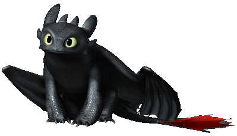

Au départ forgeron avec Gueulfor, Harold n'a jamais cessé de vouloir devenir un viking. En voulant montrer ses preuves, il captura puis fit la rencontre de Krokmou, un dragon de la classe des furies nocturnes avec lequel il se lie d'amitié.
Grâce à son entrainement avec Krokmou pour devenir un Viking, Harold devient très vite populaire dans son village, sauf auprès de Astrid pour laquelle il a toujours eu un faible.

Krokmou est un furie nocturne. Cette espèce de dragons est la seule que les vikings du village Berk n'ont jamais vu.
Krokmou fut capturé et blessé par la nouvelle armée formée par Harold. Celui-ci n'ayant pas la volonté d'achever le dragon, il le libèrera et lui permit de voler à nouveau en lui fabriquant un morceau d'aile.
C'est avec Harold que Krokmou se liera d'amitié, et surmonta de nombreux défis pour protéger leur village.

Astrid est une jeune apprentie viking du village. Intelligente, courageuse et forte, son rêve est de devenir un redoutable viking et d'avoir l'honneur de tuer un dragon devant tout le village de Berk. Sa volonté et son acharnement fait d'elle la plus forte de la bande d'apprentis.
Cependant, à l'arrivé de Harold et de ses connaissances sur les dragons, celui-ci devint le centre d'attention, et elle en devint très jalouse. La jeune viking adopta un dragon qu'elle nomma Tempête.

Stoïck la brute est le père de Harold. Il est aussi et surtout le chef du village de Berk. Grand et valeureux viking du village, il est le total opposé de son fils, Harold, considéré comme un déshonneur. La relation de Stoïck avec Harold a toujours été compliquée en conséquence. Lorsque Harold révéla l'existence de Krokmou et refusa de tuer un dragon, Stoïck fut fortement déçu par son fils. Cependant il se rendit vite compte de son erreur et apprit lui aussi à apprécier les dragons, au lieu de les combattre.

Rustik est un jeune viking. Très fort, courageux et n'étant pas du genre à hésiter en combat, Rustik pourrait faire un excellent viking, si celui-ci réfléchissait un peu plus. Son grand rêve est d'apprendre à devenir un grand chasseur de dragons... et à séduire Astrid. Lorsque Rustik apprit à apprécier les dragons comme Harold l'a fait avec Krokmou, il adopta une Terreur Terrible qu'il nomma Chochefer.

Varek fait partie de la bande de jeunes vikings de Berk. Celui est très studieux, en effet il connait tout sur les dragons et leurs caractéristiques grâce aux nombreux livres qu'il a lu sur le sujet. Cependant, il se rendit compte que le savoir ne suffisait pas pour devenir un valeureux viking, et manque encore de courage lorsqu'il est en combat. Lorsqu'il apprit à apprécier les dragons, Varek adopta un Gronk qu'il nomma Bouledogre.

Kranedur est un jeune viking de Berk. Il est aussi le frère jumeau de Kognedur. Ces deux-là passent leur temps à de chamailler, ce qui les déconcentrent beaucoup en combat. Cependant les deux jeunes vikings s'aiment beaucoup au fond et ne se laisseront jamais tomber.

Kognedur est une jeune viking de Berk. Il est aussi le frère jumeau de Kognedur. Ces deux-là passent leur temps à de chamailler, ce qui les déconcentrent beaucoup en combat. Cependant les deux jeunes vikings s'aiment beaucoup au fond et ne se laisseront jamais tomber.